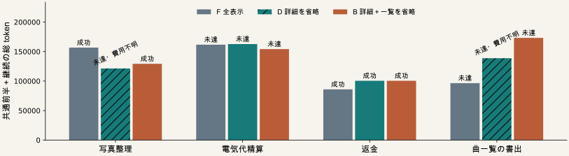

必要な情報・処理と最終品質を保ち、仕事全体の費用を減らす。
| 表示 | 古い説明の表示 | 公開APIの呼出し |
|---|---|---|
| F 全表示 | 詳細・一覧 | 全条件で同じ 登録公開名を説明閲覧前から使える |
| D 詳細を省略 | 一覧 | |
| B 詳細＋一覧を省略 | どちらも省略 |
P55と同じ４既知課題・８応答後。操作・最新応答・不確かな出力は全条件で保持。
Python状態・アーカイブ・公開契約返信・予算は共通。
| 課題 | F 全表示 | D 詳細を省略 | B 詳細＋一覧を省略 |
|---|---|---|---|
| 写真整理 | 成功 156,754 | 未達 121,357＋不明 | 成功 129,261 |
| 電気代精算 | 未達 161,694 | 未達 162,725 | 未達 154,222 |
| 返金 | 成功 85,975 | 成功 100,527 | 成功 100,527 |
| 曲一覧の書出 | 未達 96,460 | 未達 138,798＋不明 | 未達 173,238 |
数値は共通前半＋全継続の入力出力token。評価12、未評価0、未実行0。

Dの初回短縮：1,447 ／ 258 ／ 782 ／ 1,629 token。
| ４課題合計 | F | D | B |
|---|---|---|---|
| 成功数 | 2 | 1 | 2 |
| 継続AI呼出し | 21 | 25 | 27 |
| 継続API | 204 | 138 | 148 |
| 復元API | 51 | 51 | 51 |
| 使用量不明の呼出し | 0 | 2 | 0 |
| 説明公開前のAPI送信 | 0 | 0 | 1 |
推論器ロード10.1秒、常駐3,724.1秒。終了とプロセス消滅を確認。
Dは既知分でFより22,524 token多い。不明2生成。
固定した採用基準：未達 ／ 一覧保持の追加価値：支持条件を満たさない
| 比較の範囲 | 原稿での扱い |
|---|---|
| P71内のF/D/B | 同じ公開名接続・能力説明での比較 |
| 旧P55との違い | 時点・案内文も違う。接続制約だけの因果効果としない |
| 既知４課題を各１回 | 一般品質維持・統計的非劣性・新手法の証明ではない |